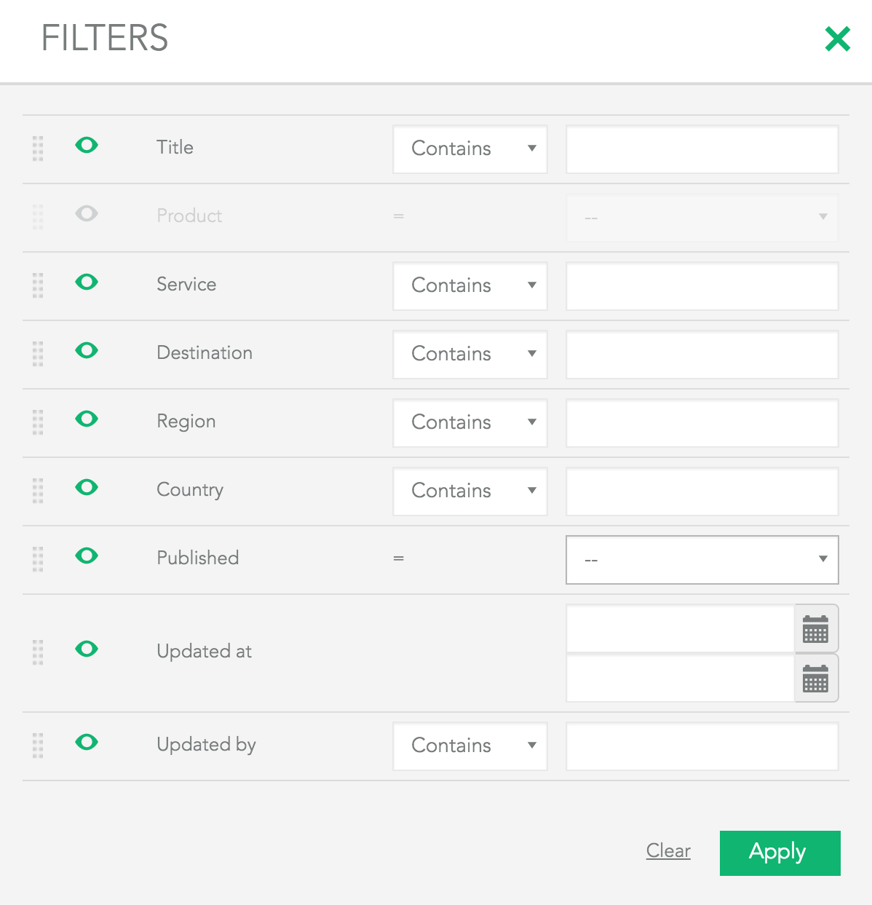
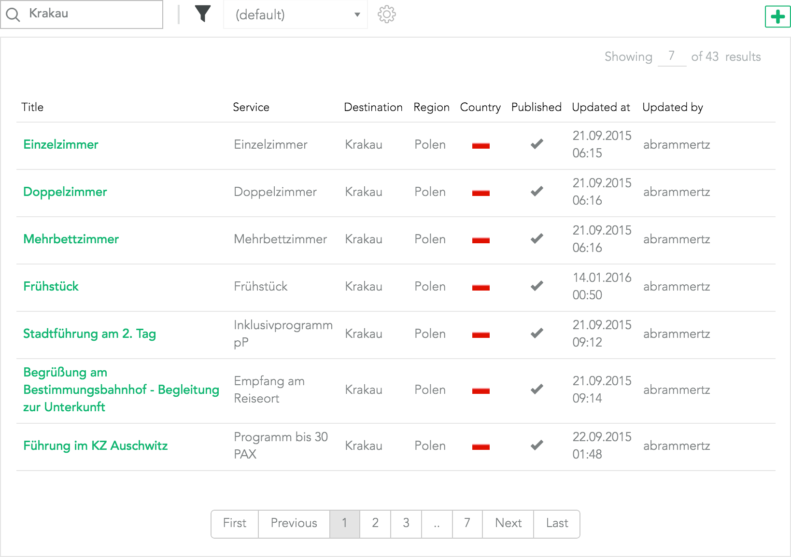
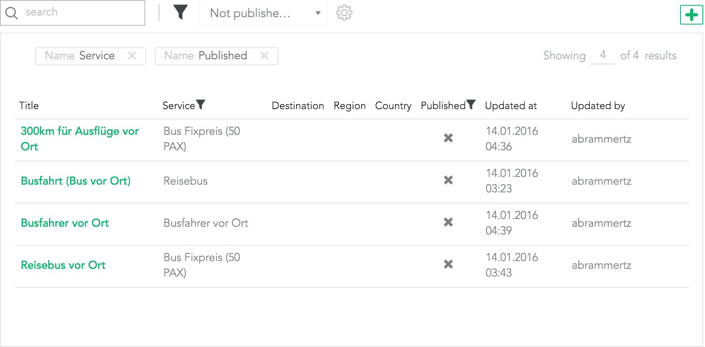

Effectively show, filter and manipulate your data directly from the database
monkeyTables are a set of PHP and JavaScript libraries with the necessary styling, to provide you with a simple and effective package, that will allow you to create powerful tables directly made from your database.
It brings a lot of nice features including:
<%= releaseSize %> | <%= releaseVersion %> released <%= releaseDate %>
supports laravel & lumen
monkeyTables provide you with a convenient interface to fetch all the data directly from the database. Its direct integration with Eloquent allows you to easily use relations defined in the ORM.
$mTable = new mTable;
$mTable
->setRequest(Request::all())
->source('Project');
$mTable->add(
(new mTableColumn("#", "id"))
)->add(
(new mTableColumn("Title", "title"))
->setClickable("/item/{{ID}}", "id")
)->add(
(new mTableColumn("Service", "service->name"))
->setClickable("/service/{{ID}}", "service->id")
)->add(
(new mTableColumn("Destination", "destination->city->name"))
);
return response()->json($mTable->render());Never worry again about writing extra code to filter your data table for any value. Every column that you add to your table will automatically be filterable.
Booleans, dates, numbers, strings, ..? No problem for monkeyTables, just set the appropriate type to automatically adjust filters and formatting.
$mTable->add(
(new mTableColumn("Updated at", "updated_at"))
->setType("date")
);
$mTable->add(
(new mTableColumn("Published", "published"))
->setType("bool")
);
$mTable->add(
(new mTableColumn("Total Sales", "sales_amount"))
->setType("number")
);
$mTable->add(
(new mTableColumn("Revenue", "revenue"))
->setType("currency")
);
Just want to grab for some specific word or number? Quick search allows you to enter any search term and searches for it in all shown columns.
Every combination of filters, sorting and even rows per page can be saved into a preset. You can then use this preset at any time to recover your previous modifications. It is possible to make a preset default, so it is loaded every time you open your table. Also you can make presets general, so they are accessible to other users.
